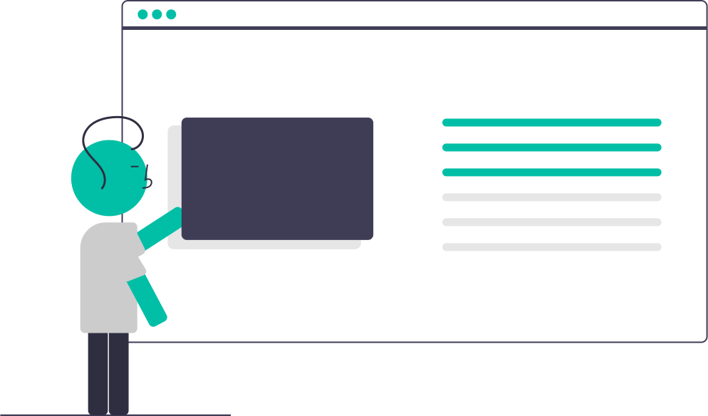

<div class="parent_home_element" id="section1">
  <div class="video-container">
    <video autoplay muted loop id="background-video">
      <source src="../../assets/img/pexels-mart-production-7534729-2048x1080-25fps.mp4" type="video/mp4">
    </video>
  </div>
  <div class="overlay_video"></div>

  <div class="text_video">
    <p class="text_animated tw">Trouver </p><br>
    <h2 class="text_static" style="margin-top: 30px;">Dans Le marché<br></h2>
  </div>

</div>


<a href="#section2" class="fixed-icon" style="z-index: 10;">
  <mat-icon>keyboard_arrow_down</mat-icon>
</a>

<div class="about_us_section" id="section2" style="margin-top: 50px;">
  <h3 class="about_us_section_title">Comment ca marche</h3>
  <mat-stepper>
    <mat-step label="Step 1" state="phone">
      <div class="stepper_composant">
        
        <p>you can easily put <br>your offer safely</p>
      </div>

      <div>
        <button mat-button matStepperNext>Next</button>
      </div>
    </mat-step>
    <mat-step label="Step 2" state="chat">
      <p>Socialize with each other.</p>
      <div>
        <button mat-button matStepperPrevious>Back</button>
        <button mat-button matStepperNext>Next</button>
      </div>
    </mat-step>
    <mat-step label="Step 3">
      <p>You're welcome.</p>
    </mat-step>

    <!-- Icon overrides. -->
    <ng-template matStepperIcon="phone">
      <mat-icon>call_end</mat-icon>
    </ng-template>
    <ng-template matStepperIcon="chat">
      <mat-icon>forum</mat-icon>
    </ng-template>
  </mat-stepper>
</div>
<app-addoffre></app-addoffre>
